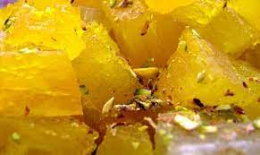
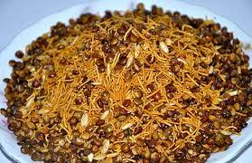
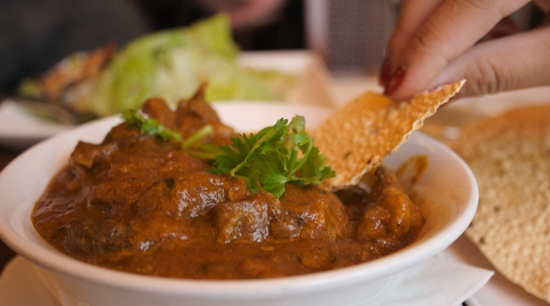
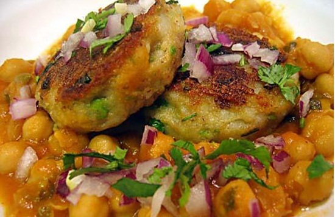
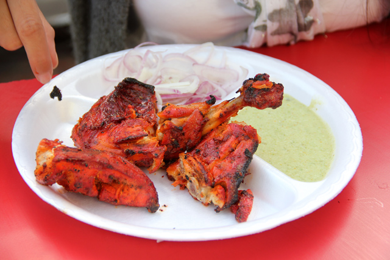

PETHA
Do you know Petha is as old as the Taj Mahal? A trip to Agra is always
incomplete without Petha.

Dalmoth
Agra offers Dalmoth, a tongue-teasing dry snack which is nutted, spiced and
full of fried lentils.

Mughlai
The Mughlai dish is a remembrance of the Mughal era in India.Spicy and
mouthwatering.

Bhalla
Bhalla is a fulfilling evening delight found in the markets and lanes of Agra.

Tandoori-Chicken
Tandoori Chicken is one of the most famous street food in Agra,Served with
green mint chutney. This would surely make you feel satisfied.